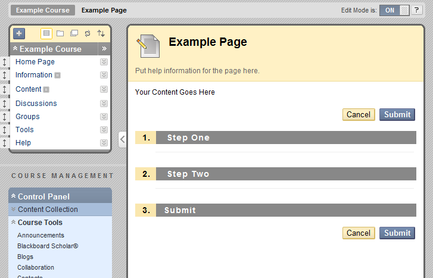

<bbNG:learningSystemPage>
The learningSystemPage tag is used for generating pages that will be displayed in a course site. As long as the course_id parameter is passed to this page, it automatically adds the course navigation menu on the left, and breadcrumbs for the course home page.
<bbNG:genericPage>
The Generic page contains no automatically added navigation. You can customise it as you wish. You may for instance, wish to use this page for Building Block settings page (via the system admin panel), or other tools where you don't wish the course navigation to be displayed.
<bbNG:adminConsolePage>
<bbNG:landingPage>
The Landing page presents a list of "Caret" items for navigation to other modules in the applciation.
Unfortunately, this tag relies on navigation item IDs, which are stored in the BBLEARN.NAVIGATION_ITEM table.
and building block developers can't easily manipulate these. For reference, the following code is an example
of how the landing page tag is used. It must be used inside a learningSystem, or generic page tag.
<bbNG:landingPage>
<bbNG:landingPageColumn>
<bbNG:landingPageSection
title="Section Title"
instructions="Section Instructions">
<bbNG:landingPageCaret>
<bbNG:landingPageCaretItem navItem="${navitem1}" />
<bbNG:landingPageCaretItem navItem="${navitem1}" />
</bbNG:landingPageCaret>
</bbNG:landingPageSection>
</bbNG:landingPageColumn>
</bbNG:landingPage>
The page tags described above, are used to implement a number of "logical" page types in blackboard. These are
A data collection page may be implemented using any of the bbNG page tags. A data collection page
uses the <bbNG:dataCollection> tag, in conjuction with <bbNG:step>
and <bbNG:dataElement> tags. The following code is an example of a Data Collection page
using a Learning System Page
<bbNG:form> <bbNG:dataCollection> <bbNG:step title="Step One"> <bbNG:dataElement> </bbNG:dataElement> </bbNG:step> <bbNG:step title="Step Two"> <bbNG:dataElement> </bbNG:dataElement> </bbNG:step> <bbNG:stepSubmit /> </bbNG:dataCollection> </bbNG:form>